Plataforma interna criada para organizar a operação da empresa Mosquiteira.com, conectando clientes, orçamentos, agenda, logística, estoque, financeiro e produção em uma experiência rápida, protegida e otimizada para celular.
Categoria: Software + OperaçãoStatus: em evoluçãoFoco em gestão interna
Visão geral do produto
O sistema foi desenhado para transformar rotinas comerciais e administrativas da Mosquiteira.com em um painel único, com módulos que funcionam como apps internos para cada área da operação.
A interface recebeu acabamento inspirado em experiências mobile modernas: painel com vidro fosco, grade de ferramentas, animações de abertura por módulo e telas preparadas para uso em desktop e principalmente no telefone.
Telas do sistema
01/13
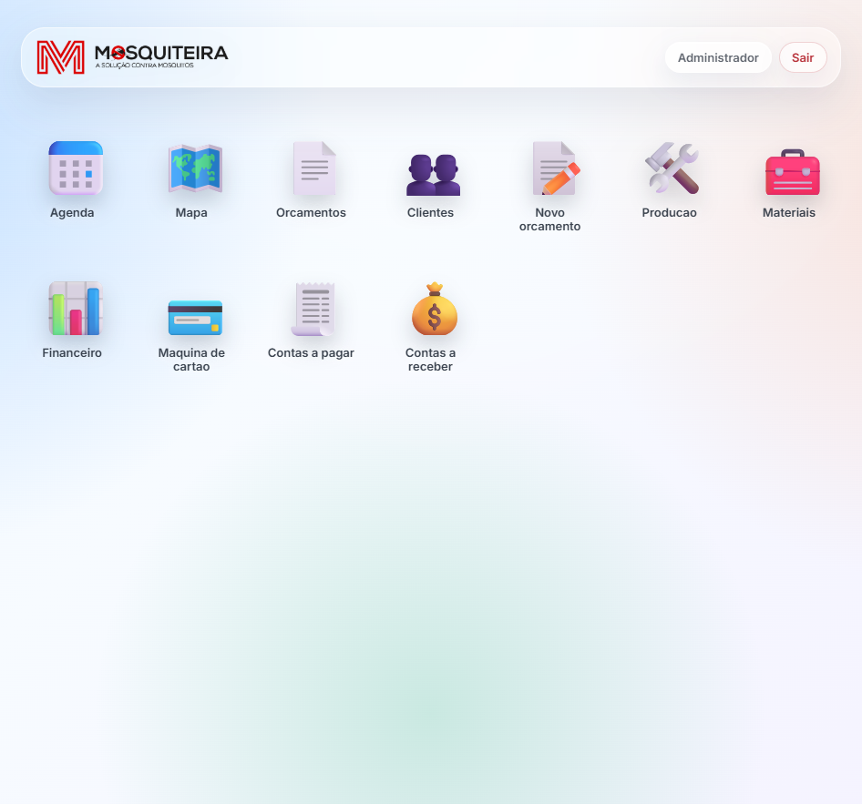
Painel principal com acesso aos módulos em formato de apps, topo com logo, usuário logado e saída segura.
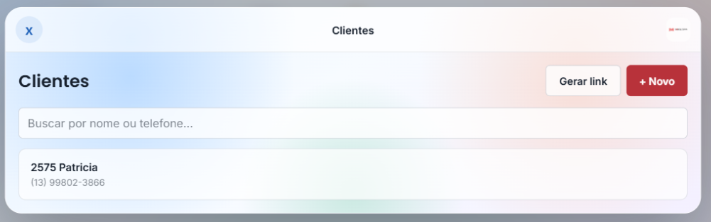
Gestão de clientes com busca, leitura rápida de cadastro e acesso aos detalhes comerciais.
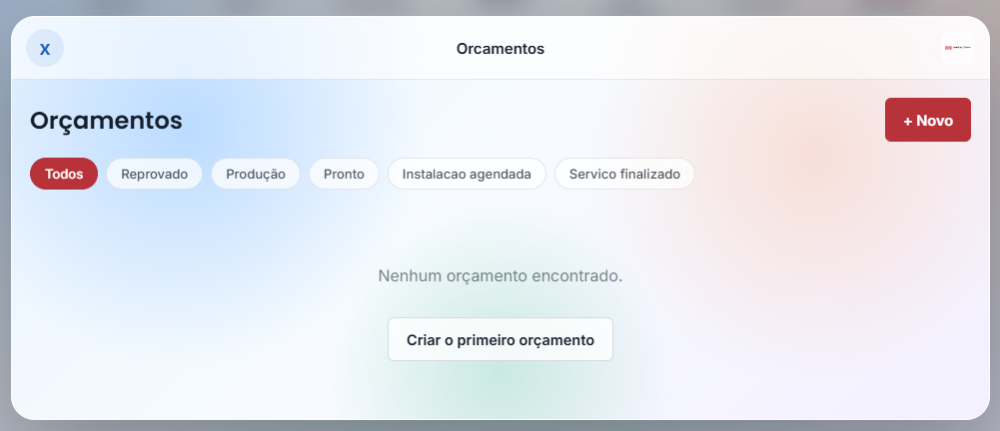
Lista de orçamentos para acompanhar solicitações, status e histórico do atendimento.
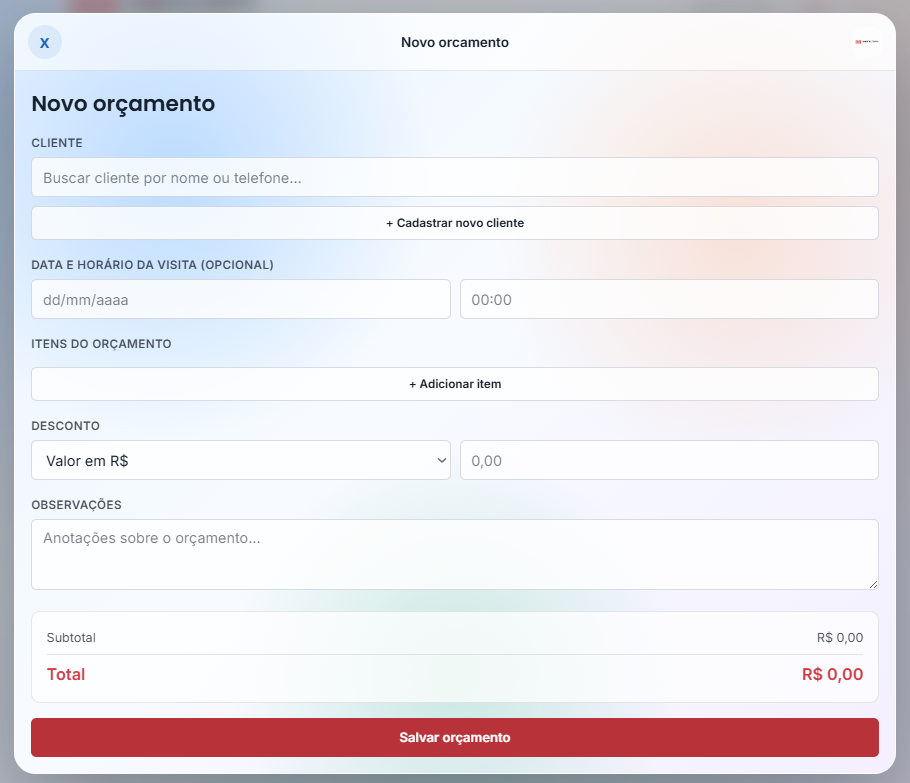
Fluxo de novo orçamento com dados do cliente, itens, medidas e cálculo para reduzir retrabalho comercial.
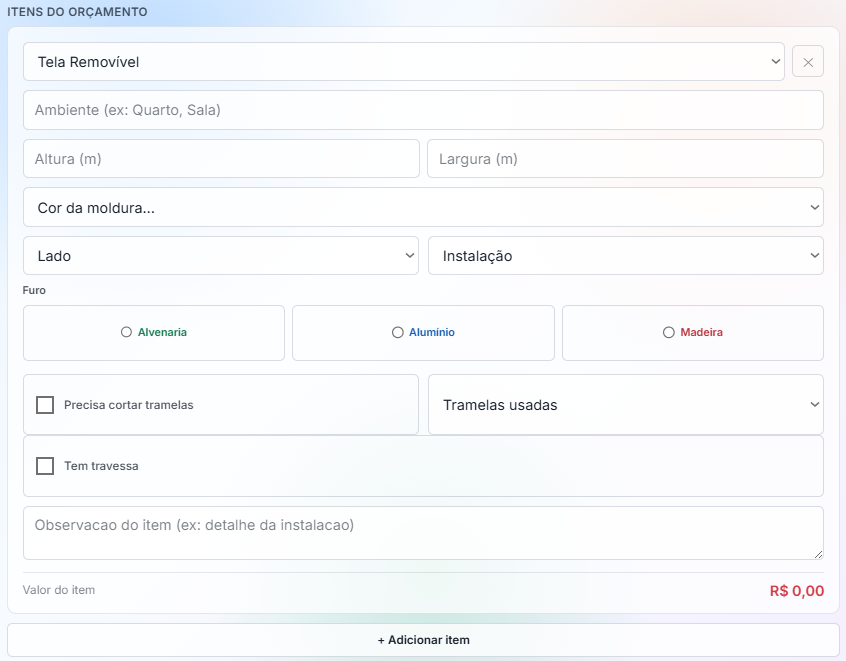
Edição detalhada dos itens do orçamento, mantendo medidas, materiais e valores organizados no mesmo fluxo.
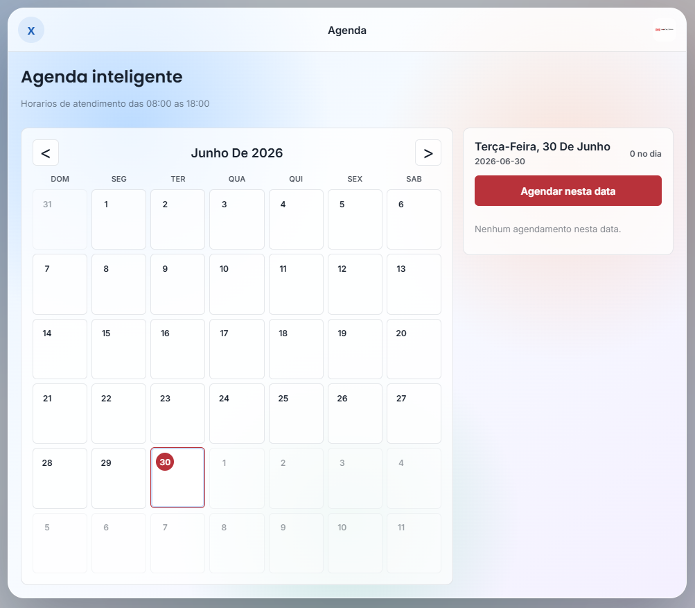
Agenda operacional para organizar visitas, instalações, compromissos e etapas do atendimento.
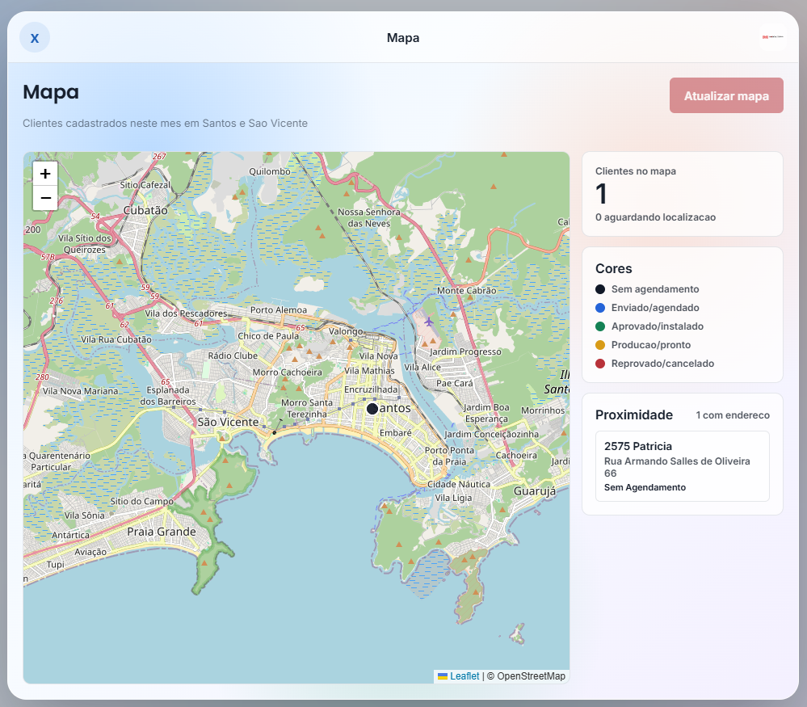
Módulo de mapa e logística com apoio da Maps JavaScript API para leitura territorial e planejamento de deslocamentos.
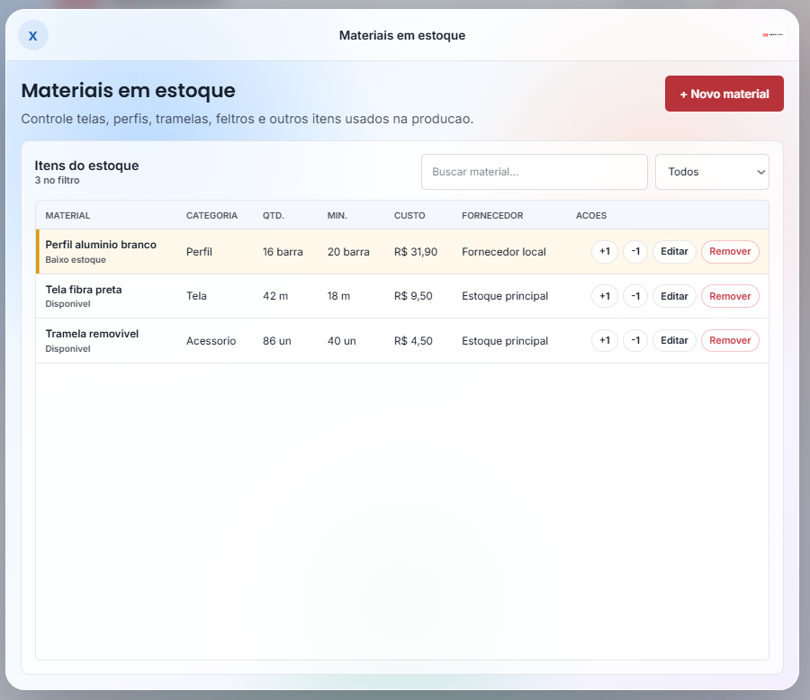
Controle de estoque para materiais e insumos, preparando base para alertas e reposição inteligente.
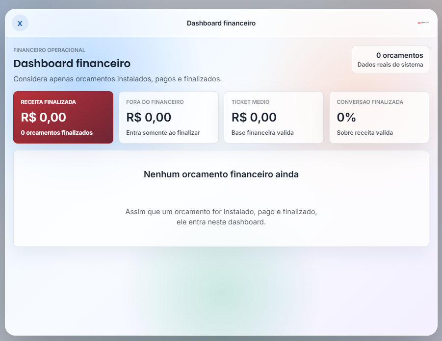
Dashboard financeiro com visão de contas, indicadores e acompanhamento da saúde operacional.
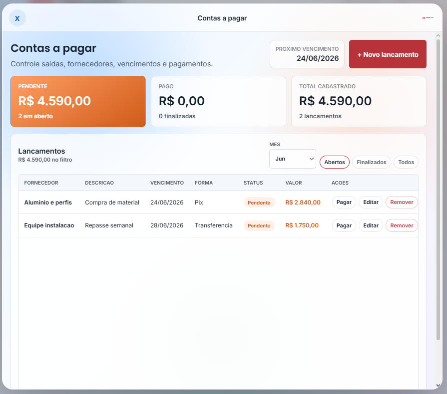
Contas a pagar para controlar compromissos financeiros e reduzir perda de prazos.
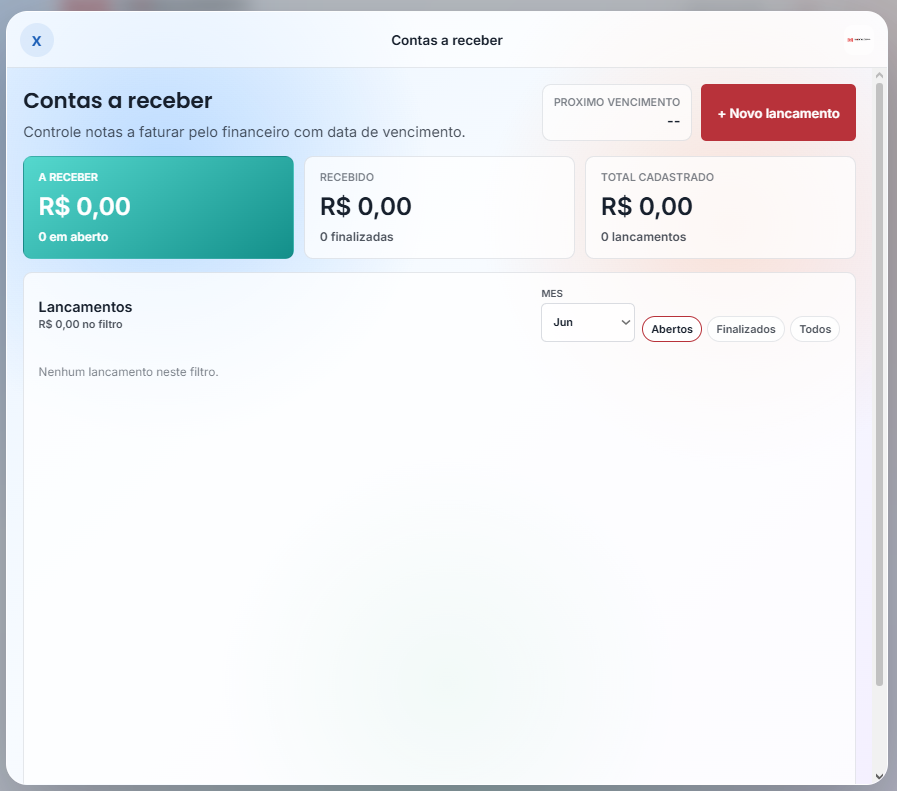
Contas a receber para acompanhar entradas previstas, recebimentos e pendências.
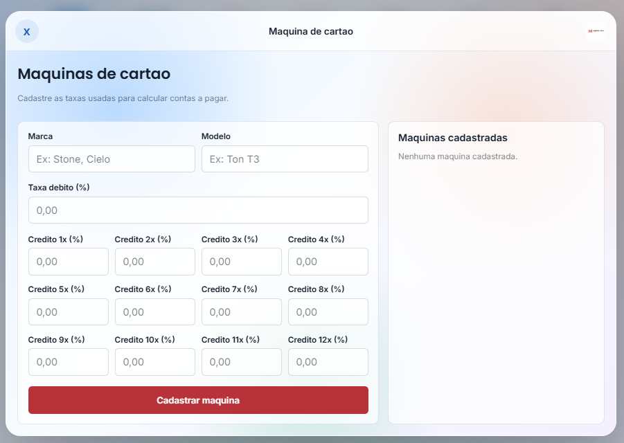
Controle de máquinas de cartão e operações financeiras ligadas aos recebimentos.
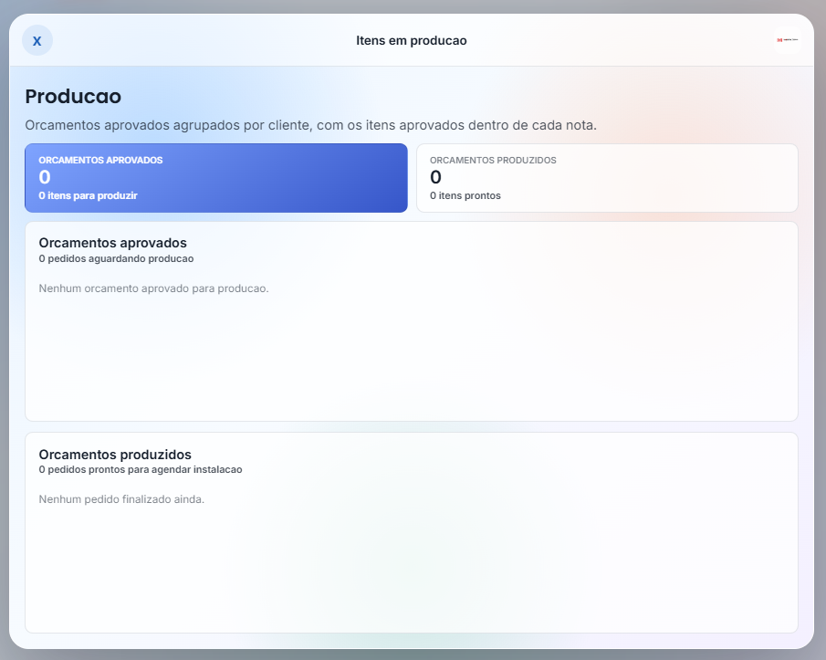
Módulo de produção para acompanhar execução, etapas internas e evolução dos pedidos.
O que o sistema entrega
Centralização da operação interna em módulos de clientes, orçamentos, agenda, logística, estoque, financeiro e produção.
Autenticação com rotas protegidas, token assinado, hash de senha com scrypt e limite simples de tentativas de login.
Experiência mobile-first com uso de 100dvh, safe-area, áreas de toque maiores e telas ajustadas para iPhone, Android e desktop.
Geração e visualização de PDFs com token para iframe/download, mantendo o fluxo protegido.
Stack e plataforma
React 19ViteReact RouterCSS modularMaps JavaScript APINode.jsExpressSQLiteAPI RESTCORSJWT/HMACscryptPDFKitOracle CloudUbuntu ServerVM Linux
Pontos de valor
Operação em uma telaAs áreas principais da empresa ficam acessíveis a partir de um painel único, reduzindo alternância entre planilhas, mensagens e controles soltos.
Uso real no celularA interface foi ajustada para telas pequenas, com inputs seguros para iOS, botões maiores e modais que ocupam melhor o espaço disponível.
Base pronta para expansãoO projeto já mapeia próximos módulos como PWA, funil de orçamentos, follow-up automático, assinatura digital, backup e relatórios financeiros avançados.
Frontend por módulosAplicação React com Vite, React Router e páginas separadas para agenda, clientes, orçamentos, financeiro, estoque, produção, logística e cadastro público.
Backend protegidoAPI Express com rotas internas autenticadas para clientes, orçamentos, PDFs e agendamentos, além de rota pública para cadastro de clientes.
Dados e documentosPersistência em SQLite via node:sqlite, geração de PDF com PDFKit e variáveis de ambiente para porta, origem do frontend, credenciais iniciais e segredo do token.
Deploy em cloudProjeto publicado em uma máquina Ubuntu na Oracle Cloud, com ambiente Linux para hospedar a aplicação e manter backend, variáveis de ambiente e arquivos do sistema sob controle.